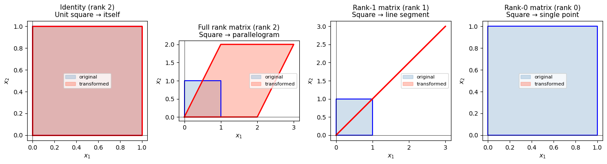

Supplementary Note: Matrix Rank#
Companion to Chapter 11: Linear Algebra & Matrices
This note takes a deeper look at rank — one of the most important properties of a matrix. Understanding rank helps you answer three practical questions:
Does my system of equations have a unique solution?
Is this matrix invertible?
How much independent information does this dataset contain?
1. Motivation — What Does “Rank” Mean?#
The rank of a matrix tells us how much independent information it contains.
Rank = the number of linearly independent rows (or columns) in a matrix.
Two rows are linearly dependent if one is just a scalar multiple (or linear combination) of the other — they carry no new information.
Think of it this way: if you have 3 balance equations but one is just “2 × equation 1”, you really only have 2 independent constraints. That’s a rank-2 system masquerading as a 3×3 system.
2. Formal Definition#
For a matrix \(A \in \mathbb{R}^{m \times n}\):
A fundamental theorem of linear algebra guarantees these two counts are always equal — a remarkable fact.
The rank is bounded by the smaller dimension:
We say \(A\) has full rank when \(\text{rank}(A) = \min(m, n)\).
3. Rank Works for Any Matrix Shape#
Rank is not limited to square matrices:
Matrix shape |
Max possible rank |
Limited by |
|---|---|---|
\(3 \times 3\) (square) |
3 |
either |
\(5 \times 2\) (tall) |
2 |
columns |
\(2 \times 5\) (wide) |
2 |
rows |
For a system \(A\mathbf{x} = \mathbf{b}\) to have a unique solution, we need \(A\) to be square and have full rank.
4. Examples#
Let’s compute rank for several matrices and connect each result to a geometric and algebraic interpretation.
import numpy as np
import matplotlib.pyplot as plt
import matplotlib.patches as mpatches
Example 1 — Full Rank Square Matrix#
Row 1 = \([1, 0]\) and Row 2 = \([0, 1]\) point in completely different directions — they are independent.
A1 = np.array([[1, 0],
[0, 1]])
print("A1 =\n", A1)
print(f"rank(A1) = {np.linalg.matrix_rank(A1)}")
print(f"det(A1) = {np.linalg.det(A1):.1f} (non-zero → invertible)")
A1 =
[[1 0]
[0 1]]
rank(A1) = 2
det(A1) = 1.0 (non-zero → invertible)
Example 2 — Dependent Rows (Rank-Deficient)#
Here \(\text{Row}_2 = 2 \times \text{Row}_1\). The second row adds no new information. This matrix is singular — it cannot be inverted, and \(A_2\mathbf{x} = \mathbf{b}\) has either no solution or infinitely many.
A2 = np.array([[1, 2],
[2, 4]])
print("A2 =\n", A2)
print(f"rank(A2) = {np.linalg.matrix_rank(A2)} ← only 1 independent row")
print(f"det(A2) = {np.linalg.det(A2):.1f} (zero → singular, NOT invertible)")
try:
np.linalg.solve(A2, np.array([1, 2]))
except np.linalg.LinAlgError as e:
print(f"\nnp.linalg.solve error: {e}")
A2 =
[[1 2]
[2 4]]
rank(A2) = 1 ← only 1 independent row
det(A2) = 0.0 (zero → singular, NOT invertible)
np.linalg.solve error: Singular matrix
Example 3 — Rectangular (Tall) Matrix#
Maximum possible rank = \(\min(3, 2) = 2\). There cannot be more independent directions than columns.
A3 = np.array([[1, 2],
[3, 4],
[5, 6]])
print("A3 =\n", A3)
print(f"Shape: {A3.shape} → max rank = min(3, 2) = 2")
print(f"rank(A3) = {np.linalg.matrix_rank(A3)} (full rank for this shape)")
A3 =
[[1 2]
[3 4]
[5 6]]
Shape: (3, 2) → max rank = min(3, 2) = 2
rank(A3) = 2 (full rank for this shape)
Example 4 — Partially Dependent Rows in a 3×3 Matrix#
Notice that \(\text{Row}_3 = \text{Row}_1 + \text{Row}_2\). So despite being 3×3, this matrix only has rank 2.
A4 = np.array([[1, 2, 3],
[4, 5, 6],
[5, 7, 9]]) # row3 = row1 + row2
print("A4 =\n", A4)
print(f"Row1 + Row2 = {A4[0] + A4[1]} == Row3 {A4[2]} → dependent!")
print(f"rank(A4) = {np.linalg.matrix_rank(A4)} (rank-deficient 3×3)")
print(f"det(A4) = {np.linalg.det(A4):.6f} (≈ 0 → singular)")
A4 =
[[1 2 3]
[4 5 6]
[5 7 9]]
Row1 + Row2 = [5 7 9] == Row3 [5 7 9] → dependent!
rank(A4) = 2 (rank-deficient 3×3)
det(A4) = 0.000000 (≈ 0 → singular)
5. Geometric Interpretation#
Rank tells you the dimension of the output space (column space) of a linear transformation \(\mathbf{y} = A\mathbf{x}\).
Rank |
What the transformation does to 2D space |
|---|---|
2 |
Maps the plane to the full plane (invertible) |
1 |
Collapses the plane onto a line |
0 |
Collapses everything to a point (zero matrix) |
The plot below shows this visually: a unit square transformed by a full-rank vs rank-1 matrix.
square = np.array([[0, 1, 1, 0, 0],
[0, 0, 1, 1, 0]])
square.shape
(2, 5)
# Unit square corners
square = np.array([[0, 1, 1, 0, 0],
[0, 0, 1, 1, 0]])
A_full = np.array([[2, 1],
[0, 2]]) # rank 2
A_rank1 = np.array([[1, 2],
[1, 2]]) # rank 1: row2 = row1
A_rank0 = np.zeros((2, 2)) # rank 0: all rows are zero
fig, axes = plt.subplots(1, 4, figsize=(14, 4))
def plot_transform(ax, A, title):
transformed = A @ square
ax.fill(square[0], square[1], alpha=0.25, color='steelblue', label='original')
ax.plot(square[0], square[1], 'b-', linewidth=1.5)
ax.fill(transformed[0], transformed[1], alpha=0.35, color='tomato', label='transformed')
ax.plot(transformed[0], transformed[1], 'r-', linewidth=2)
ax.axhline(0, color='k', linewidth=0.5)
ax.axvline(0, color='k', linewidth=0.5)
ax.set_aspect('equal')
ax.set_title(title, fontsize=11)
ax.legend(fontsize=8)
ax.set_xlabel('$x_1$'); ax.set_ylabel('$x_2$')
# Original (identity)
plot_transform(axes[0], np.eye(2), 'Identity (rank 2)\nUnit square → itself')
plot_transform(axes[1], A_full, f'Full rank matrix (rank {np.linalg.matrix_rank(A_full)})\nSquare → parallelogram')
plot_transform(axes[2], A_rank1, f'Rank-1 matrix (rank {np.linalg.matrix_rank(A_rank1)})\nSquare → line segment')
plot_transform(axes[3], A_rank0, f'Rank-0 matrix (rank {np.linalg.matrix_rank(A_rank0)})\nSquare → single point')
plt.tight_layout()
plt.show()
print(f"rank(A_full) = {np.linalg.matrix_rank(A_full)}")
print(f"rank(A_rank1) = {np.linalg.matrix_rank(A_rank1)}")
print(f"rank(A_rank0) = {np.linalg.matrix_rank(A_rank0)}")

rank(A_full) = 2
rank(A_rank1) = 1
rank(A_rank0) = 0
6. Why Rank Matters in Chemical Engineering#
6.1 Material Balances#
When setting up a system of balance equations, the coefficient matrix \(A\) may be rank-deficient if:
You wrote the same balance twice (e.g., an overall balance that is just the sum of two component balances)
Two streams have identical compositions (no independent information)
If \(\text{rank}(A) < n\) (number of unknowns), the system is underdetermined — you need more independent measurements.
6.2 Degrees of Freedom Analysis#
The degrees of freedom (DOF) of a system is:
DOF |
Meaning |
|---|---|
0 |
Exactly determined — unique solution |
> 0 |
Underdetermined — need more equations or measurements |
< 0 |
Overdetermined — conflicting equations |
6.3 Checking Your Balance Before Solving#
def check_system(A, b, unknowns):
"""Diagnose an Ax=b system before attempting to solve."""
m, n = A.shape
r = np.linalg.matrix_rank(A)
dof = n - r
print(f"Matrix size : {m} equations × {n} unknowns")
print(f"Unknowns : {unknowns}")
print(f"rank(A) = {r}")
print(f"DOF = {n} - {r} = {dof}")
if dof == 0 and m == n:
print("→ System is exactly determined. Proceed with np.linalg.solve.")
elif dof > 0:
print(f"→ Underdetermined: {dof} free variable(s). Need more independent equations.")
else:
print("→ Overdetermined or inconsistent. Check for redundant equations.")
# --- Well-posed system ---
print("=== Well-posed mixer balance ===")
A_ok = np.array([[1.0, 1.0],
[0.4, 0.8]])
b_ok = np.array([100.0, 60.0])
check_system(A_ok, b_ok, ['F1', 'F2'])
print()
# --- Rank-deficient system (redundant balance) ---
print("=== Rank-deficient system (row2 = 2×row1) ===")
A_bad = np.array([[1.0, 1.0],
[2.0, 2.0]])
b_bad = np.array([100.0, 200.0])
check_system(A_bad, b_bad, ['F1', 'F2'])
=== Well-posed mixer balance ===
Matrix size : 2 equations × 2 unknowns
Unknowns : ['F1', 'F2']
rank(A) = 2
DOF = 2 - 2 = 0
→ System is exactly determined. Proceed with np.linalg.solve.
=== Rank-deficient system (row2 = 2×row1) ===
Matrix size : 2 equations × 2 unknowns
Unknowns : ['F1', 'F2']
rank(A) = 1
DOF = 2 - 1 = 1
→ Underdetermined: 1 free variable(s). Need more independent equations.
7. Summary#
Concept |
Key point |
|---|---|
Rank |
Number of linearly independent rows = columns |
Full rank |
\(\text{rank}(A) = \min(m, n)\) — maximum possible |
Rank-deficient |
At least one row/column is a combination of others |
Unique solution |
Requires square \(A\) with full rank (det ≠ 0) |
DOF = 0 |
\(\text{rank}(A) = n_{\text{unknowns}}\) — exactly solvable |
NumPy function |
|
Rule of thumb before calling np.linalg.solve:
Check that \(A\) is square:
A.shape[0] == A.shape[1]Check full rank:
np.linalg.matrix_rank(A) == A.shape[0]Or equivalently:
np.linalg.det(A) != 0
If either check fails, you have a modeling problem — not a coding problem.